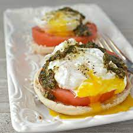

Poached Eggs Caprese

A Deliciously Fluffy Style of Eggs
A delicious dish inspired by eggs Benedict with mozzarella, tomatoes, and pesto.
Ingredients
- 1 tablespoon distilled white vinegar
- 2 teaspoons salt
- 4 eggs
- 2 English muffin, split
- 4 (1 ounce) slices mozzarella cheese
- 1 tomato, thickly sliced
- 4 teaspoons pesto
- salt to taste